Content for Theoretical part
The Domain Name System (DNS) operates as a globally distributed and hierarchical database responsible for translating human-readable hostnames (such as studife.it.p.lodz.pl) into machine-routable IP addresses, as well as handling reverse lookups. It was introduced as a modern replacement for the legacy HOSTS.TXT file, a centralized approach where every computer on the network had to periodically sync the entire list. That static model led to high network load, update latency, and administrative bottlenecks. To solve these limitations, DNS was architected around key operational properties:
Transport-wise, DNS uses UDP port 53 for standard, lightweight requests and responses. It switches to TCP port 53 when handling truncated payloads exceeding single-packet limits or performing authoritative zone transfers. Modern network privacy is enhanced over encrypted channels such as DNS over TLS (DoT), DNS over HTTPS (DoH), and DNS over QUIC (DoQ).
A Top-Level Domain (TLD) represents the rightmost label in a fully specified hostname (e.g., .pl in studife.it.p.lodz.pl). Governed by IANA/ICANN, the TLD namespace encompasses over a thousand active extensions categorised into distinct groups:
.arpa, utilized primarily for reverse IP-to-hostname mappings (originating from ARPANET)..com, .net, .org, and .biz with minimal registration restrictions..edu, .gov, and .mil reserved exclusively for verified entities matching criteria defined by sponsoring organizations..pl, .uk, .de, and .us..app, .shop, and .online.xn-- prefix (for instance, the Russian .рф is stored as xn--p1ai).The official registry of all active TLDs is maintained by IANA in the Root Zone Database.
Hierarchical Structure
The DNS namespace forms an inverted tree structure evaluated from right to left:
root (.) → TLD (.pl) → lodz.pl → p.lodz.pl → it.p.lodz.pl → host studife
.): The apex of the hierarchy.studife.it.p.lodz.pl.).DNS Query Types
Typical Resolution Workflow (e.g., client somehost.gei.insa.toulouse.fr requesting studife.it.p.lodz.pl):
hosts file and local DNS cache.8.8.8.8). The request ascends through the organizational chain (dns.gei.insa.toulouse.fr, dns.insa.toulouse.fr, dns.toulouse.fr, dns.fr) up to the root servers..pl authority → lodz.pl → p.lodz.pl.it.p.lodz.pl returns the definitive IP address. The result traverses back along the resolution path, where intermediate resolvers store it in cache according to its Time to Live (TTL).DNS Delegation
Delegation transfers administrative authority for a specific subdomain to another set of name servers. The parent zone contains NS records pointing to the target sub-zone's servers, accompanied by A/AAAA glue records if the name server itself resides within the child zone.
Example snippet in parent zone:
p.lodz.pl. IN NS ns1.p.lodz.pl.Setting up a custom domain (e.g., my_name.org) requires acquiring it via a registrar and configuring zone records, which must contain at least:
A record: Maps the domain to the host IP.MX record: Directs email traffic to designated mail servers.NS records: Identifies authoritative name servers.A Resource Record (RR) is an entry stored within a DNS zone file. It comprises five standardized attributes: NAME (owner), TTL (cache lifetime in seconds), CLASS (typically IN for Internet), TYPE, and RDATA (payload data).
Example:
studife.it.p.lodz.pl. 300 IN A 192.0.2.10Common Record Types:
A / AAAA: Maps hostnames to IPv4 / IPv6 addresses.CNAME: Defines an alias pointing to another canonical hostname (cannot point directly to an IP).MX: Specifies mail exchange servers; lower numerical values indicate higher delivery priority.NS: Indicates authoritative servers for domain delegation.SOA: Defines zone parameters (serial number, refresh timers, admin contact).TXT: Holds arbitrary text data, commonly used for security frameworks (SPF, DKIM) and ownership verification.PTR: Maps IP addresses back to canonical hostnames.CAA: Specifies which Certificate Authorities are authorized to issue SSL/TLS certificates for the domain.Records can be inspected using diagnostic commands like dig it.p.lodz.pl NS +short.
Forward vs. Reverse DNS
PTR records under the .arpa tree:
in-addr.arpa (e.g., 192.0.2.10 becomes 10.2.0.192.in-addr.arpa).ip6.arpa.A reverse lookup can be executed via dig -x 192.0.2.10. Forward and reverse lookups are managed separately, as reverse zones are usually controlled by network providers (ISPs) holding IP allocations rather than domain owners.
AA (Authoritative Answer) flag set.Direct queries targeting zone primary servers (e.g., dig @ns1.example.org example.org SOA) return authoritative answers, whereas public resolvers (e.g., 8.8.8.8) usually provide non-authoritative responses.
DNS Resolvers
DNS Caching
Stores recent queries temporarily within application memory, OS caches, routers, or resolvers to minimize network traffic and lower latency.
NXDOMAIN).The /etc/hosts File
A static text configuration file used for local IP-to-hostname resolution (located at C:\Windows\System32\drivers\etc\hosts on Windows).
Format:
192.168.1.20 server.localBy default (governed by /etc/nsswitch.conf in Linux), system resolvers evaluate the hosts file prior to issuing network DNS queries.
Resolution Order on Client Devices:
/etc/hosts fileElectronic mail transport relies on specialized client-server protocols designed for sending and retrieving messages.
SMTP (Simple Mail Transfer Protocol)
Used exclusively for outbound message transmission from clients to mail servers and for server-to-server relaying over TCP connections.
25: Inter-server relay587: Client submission (typically via STARTTLS)465: Implicit TLS-encrypted SMTPEHLO/HELO, MAIL FROM, RCPT TO, DATA, RSET, NOOP, QUITSMTP Dialogue Example:
Client: EHLO example.com
Server: 250-Hello example.com
Client: MAIL FROM:<alice@example.com>
Server: 250 OK
Client: RCPT TO:<bob@example.com>
Server: 250 OK
Client: DATA
Server: 354 End data with <CR><LF>.<CR><LF>
Client: Subject: Hello
Client: Hello Bob!
Client: .
Server: 250 Message accepted for delivery
Client: QUITPOP3 (Post Office Protocol v3)
Designed to download messages from a server mailbox to a single local device.
110 (Plain/STARTTLS), 995 (Implicit SSL/TLS)USER, PASS, STAT, LIST, RETR, DELE, NOOP, QUITIMAP (Internet Message Access Protocol)
Enables real-time management and synchronization of emails directly on the remote server.
143 (Plain/STARTTLS), 993 (Implicit SSL/TLS)LOGIN, SELECT, FETCH, SEARCH, STORE, COPY, EXPUNGE, LOGOUTClient-Server Email Flow:
MX record.NNTP (Network News Transfer Protocol) is designed for reading, posting, and distributing articles across Usenet newsgroups.
119 (Standard), 563 (NNTPS - encrypted)ARTICLE, GROUP, LIST, HEAD, BODY, POST, NEXT, QUITUnlike email (primarily private, point-to-point communication), NNTP operates as a broadcast-oriented, public discussion ecosystem.
local-part@domain.tld (e.g., user@example.com), where the local part identifies the mailbox and the domain identifies the target service.An RFC 5322 email message comprises two distinct sections:
From, To, Cc, Bcc, Subject, Date, Reply-To, Message-ID, Received (server hop history), MIME-Version, and Content-Type.The header and body are separated by an explicit empty line (represented by two consecutive CRLF sequences).
MIME-Version, Content-Type, Content-Transfer-Encoding, Content-Disposition.4xx temporary failure). Legitimate servers automatically retry delivery later, whereas simple spam bots typically abandon the attempt.Content for Practical part
Content for DNS system
In this task, DNS settings, tool outputs (dig, host, nslookup), and host file configurations were analyzed.
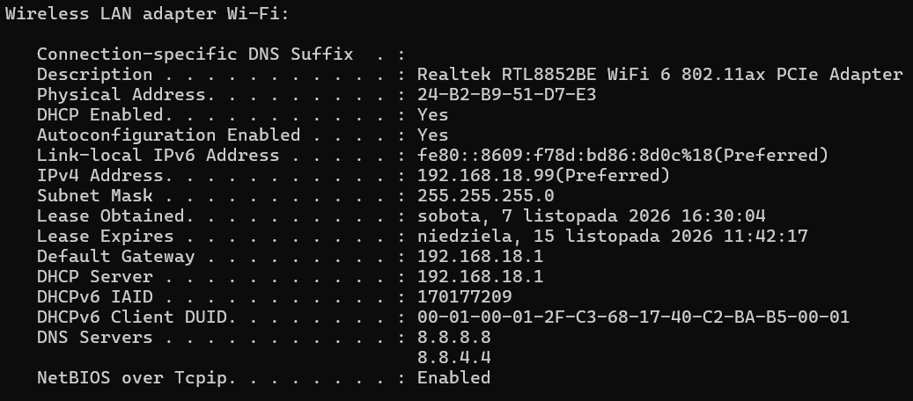
2.1.2.1. Domain names and corresponding IP addresses of computers in the lodz.pl domain.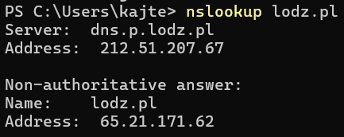
2.1.2.2. A computer somewhere in Europe (Switzerland) and find all available information about the DNS settings of this computer.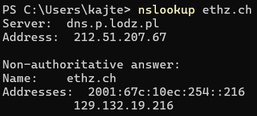
2.1.2.3. A computer somewhere outside Europe (United Kingdom) and find all available information about the DNS settings of this computer.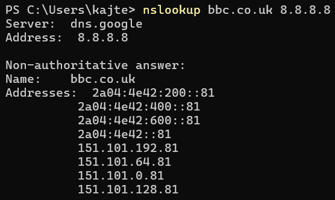
2.1.2.4. Verify DNS assignment for localhost.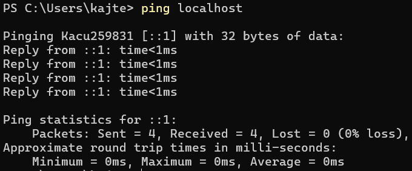
2.1.2.5. Flush the DNS memory on our computer using ipconfig.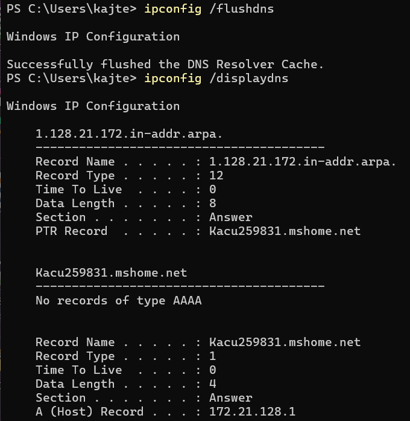
2.1.2.6. Change the hosts file such that when we enter ife42.com, the website msn.com will display (since MSN uses Azure Front Door, we used ping in terminal to prove it works).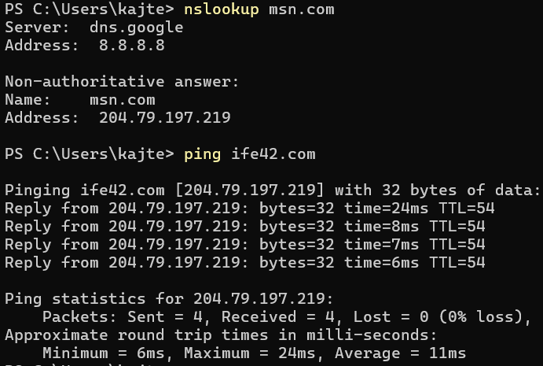
Content for Mail system
In this task, intentional errors were made during the email creation process to analyze the server's bounce-back messages and rejection handling in the Thunderbird mail client.
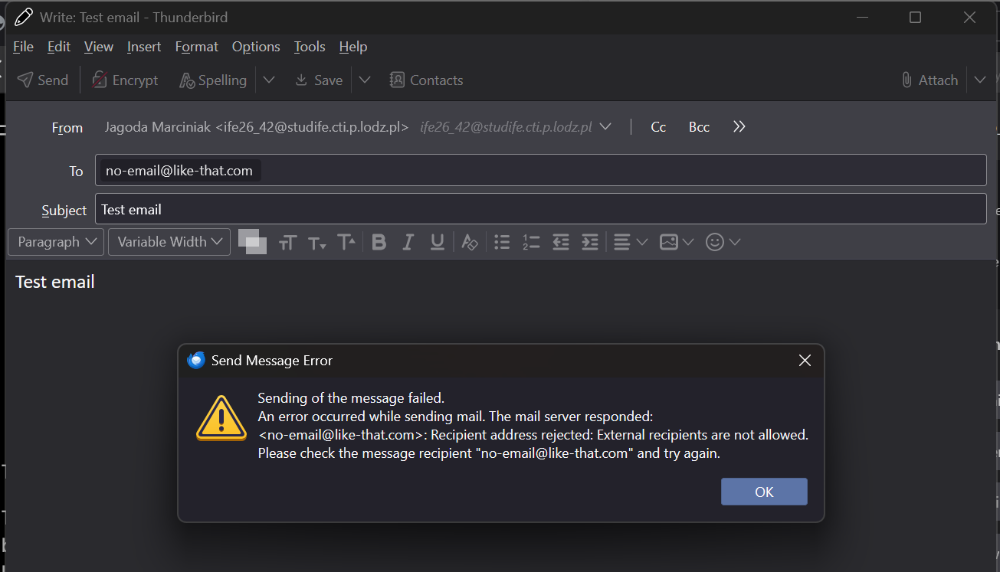
2.2.2.2. A non-existent user on an existent e-mail server.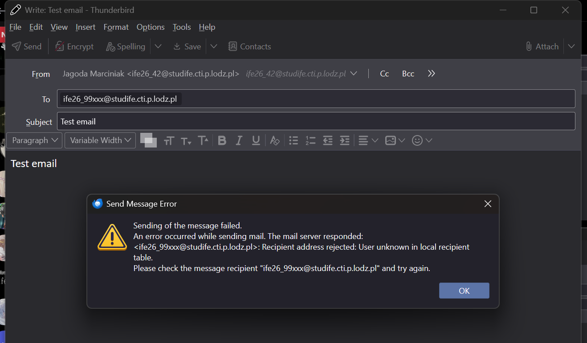
2.2.2.3. A server which is not an e-mail server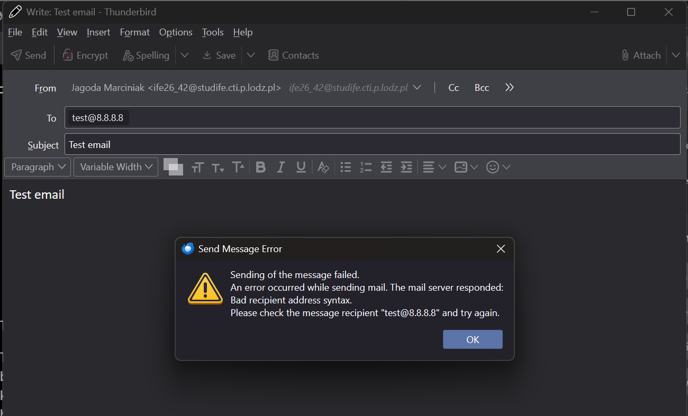
Using Wireshark, the network interface was monitored to analyze the process of sending and receiving e-mails via Thunderbird. Based on the packet capture, the following protocol stack was identified for the e-mail communication process.
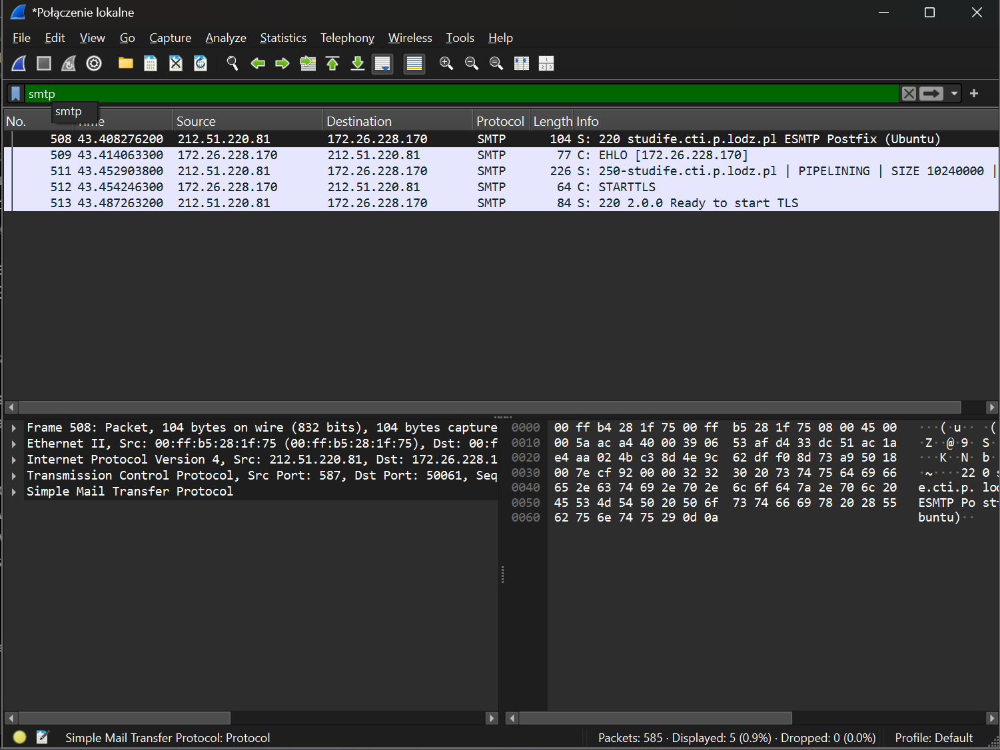
studife.cti.p.lodz.pl Postfix server.STARTTLS command, upgrading the initial plain text connection to an encrypted TLS connection.To bypass the ISP port 25 block on my home network, I established an SSH tunnel to the university server and executed the local telnet command from within the server environment. The screenshots below document the SSH login, the successful manual SMTP transaction, and the final receipt of the message in the Thunderbird client.
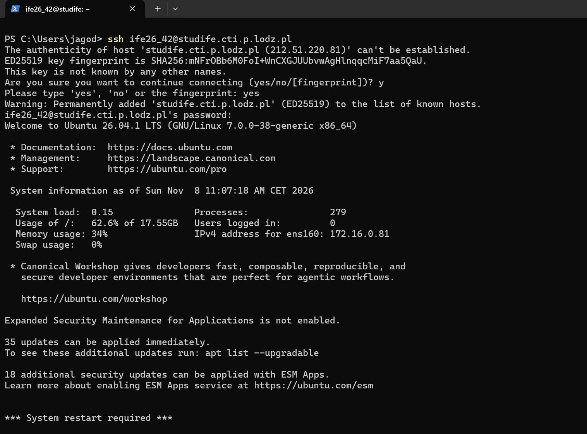
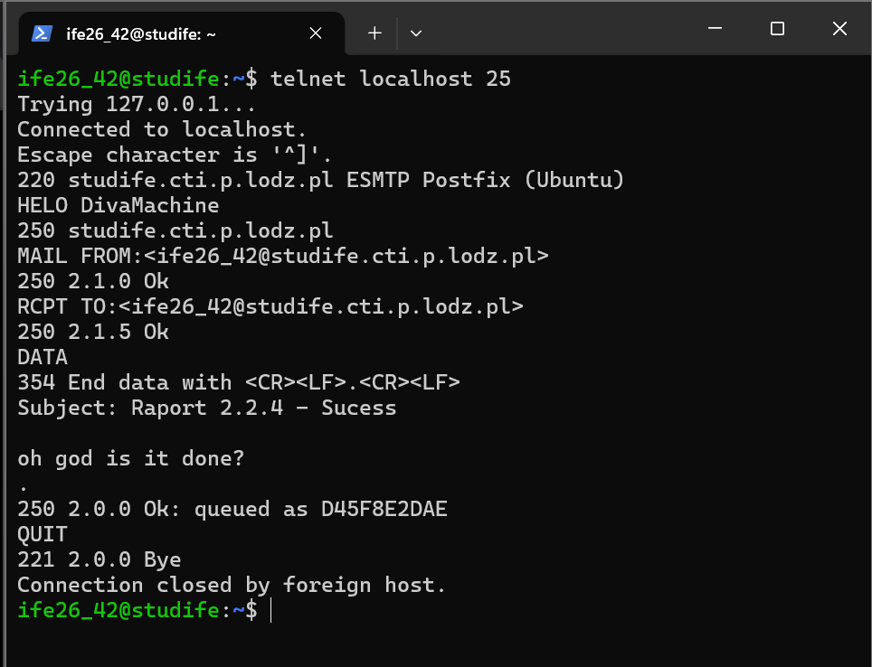
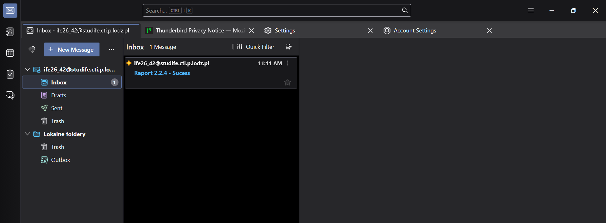
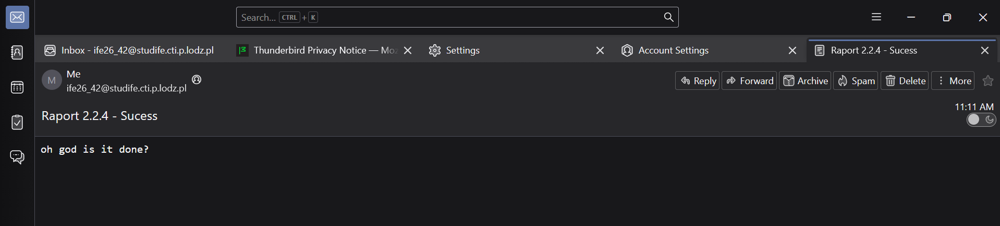